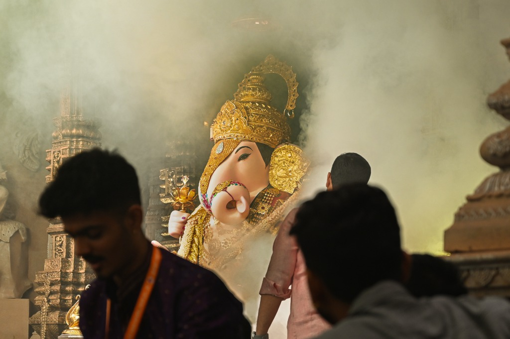
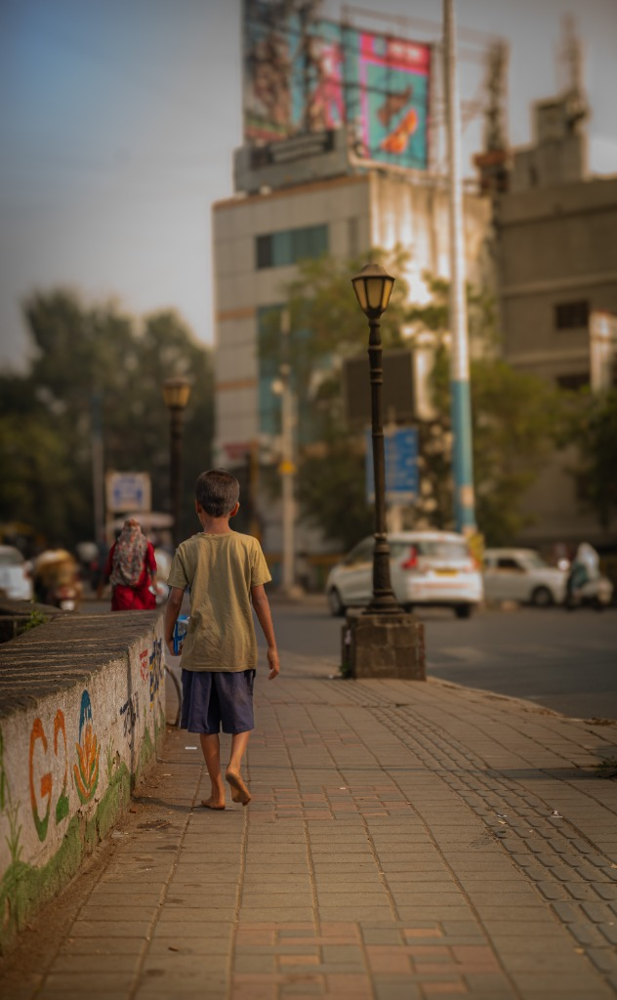
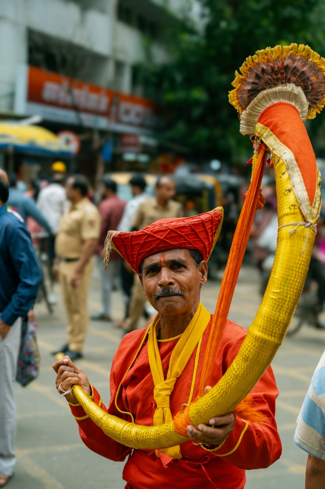
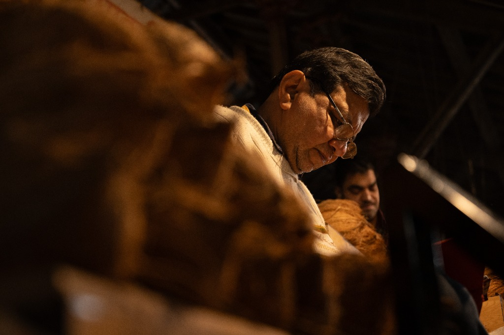
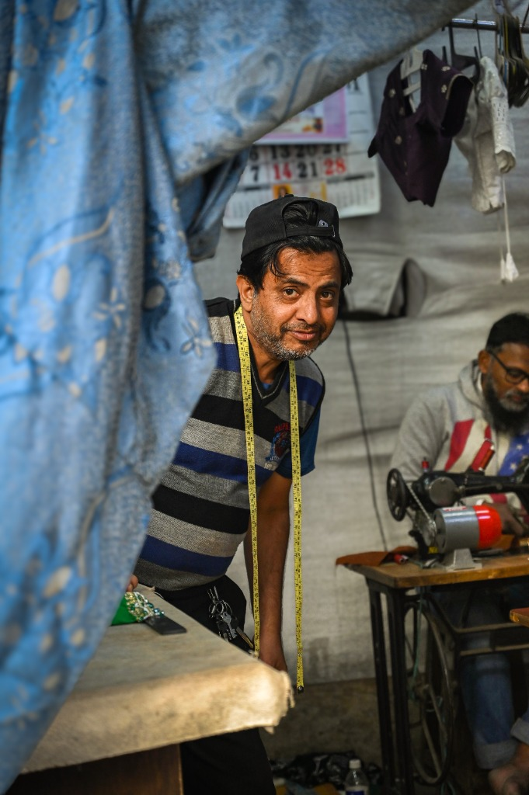

Street / Documentary
Pune
Pune is a city that lives in layers — the thunderous devotion of Ganesh Chaturthi, the quiet dedication of artisans shaping clay into divinity, and the unhurried rhythm of everyday life on its sidewalks. This series is a street photography journal, capturing the people, the faith, and the unscripted moments that define the cultural heartbeat of Maharashtra's pride.


Unscripted childhood — A barefoot boy walks the city's sidewalk, the world behind him a blur of graffiti, lanterns, and passing lives

The bearer of tradition — A man in saffron kurta and Marathi pagdi raises the tutari, carrying centuries of Pune's procession heritage in a single frame

Hands that shape faith — An idol sculptor works under a single warm light, his glasses catching the glow as clay becomes divinity

The measure of a man — A tailor pauses between stitches, his measuring tape and steady gaze telling the story of a craft passed through generations